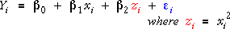

Quadratic models
A nonlinear relationship between Y and x can sometimes be modelled by adding a quadratic term to the simple linear model,
Although the relationship between Y and x is nonlinear,
The quadratic model is also a general linear model because it is linear in the parameters.
We treat the model as a general linear model with two explanatory variables,

The only difference from ordinary linear models with two explanatory variables is that the two explanatory variables are related quadratically. However since we treat them as constants, this does not affect how the model is fitted or used.
Linear representation of the quadratic model
The two variables on the left of the diagram below are related nonlinearly. A quadratic curve is drawn on the diagram and its parameters can be adjusted by dragging the three red arrows.
The 3-dimensional diagram on the right plots y against x and x2. Click the x2-x button to rotate the diagram to see the quadratic relationship between the two 'explanatory variables'.
Click the y-x2-x button. The quadratic model corresponds to a plane on the right. Drag the red arrows on the left again and observe that changes to the model alter the position of this plane.
Now click the y-x button to rotate the 3-dimensional model to show the same scatterplot that is displayed on the left of the diagram and again adjust the quadratic curve.
The linear plane in 3 dimensions corresponds to fitted values that lie on a quadratic curve (the grey line) on the plot of y against x.
Finally, click the checkbox Show residuals and observe that the residuals are the same on both the left and right, then click Least Squares to find the least squares parameter estimates.